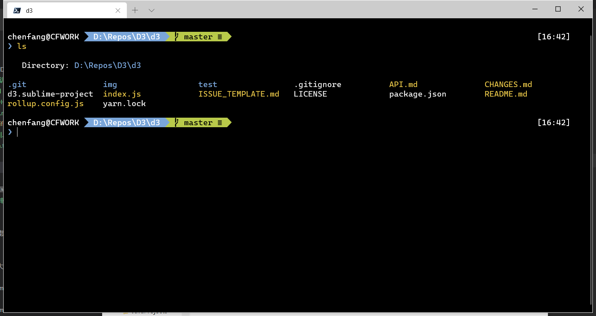
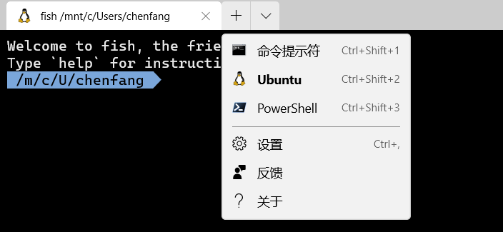

下面是我一直在用的终端设置与美化方案，自从出了oh-my-posh、wsl后就再也不用折腾linux，再也不用眼馋osx了，Microsoft Yes！
Powershell Core介绍与安装
PowerShell Core 是Microsoft发布的PowerShell跨平台版本，主要是利用 .Net Core 的特性实现跨平台，值得一提的是 oh-my-posh，它是linux环境下大名鼎鼎的 oh-my-zsh的PowerShell版，美化与易用程度无敌，如下图，美观是第一生产力。

安装Powershell
安装方法很简单，去github下载对应的安装文件即可。
安装Windows Terminal
cmd早就该换了，Windows Terminal是最新的终端环境，商店里面搜索Windows Terminal安装一下就行，直达链接;
安装 oh-my-posh
打开powshell，Powershell Core的二进制程序是pwsh.exe
1 | Install-Module posh-git -Scope CurrentUser #git |
然后在终端设置主题
1 | Set-Prompt |
最后设置powershell的配置文件，导入安装的插件，并设置主题，pwsh的话是在\文档\PowerShell\下的Microsoft.PowerShell_profile.ps1
1 | Import-Module posh-git |
windows terminal配置
打开Windows Terminal，点击菜单下的配置，会打开一个json，在这里面加入设置就行
字体跟主题设置
1 | "defaults": { |
字体是微软新出的Cascadia Code，新的等宽字体，而且加了Powerline 符号适合配合oh-my-posh主题。
colorScheme在配置文件下面{schemes}一节自定义添加，
1 | { |
默认配置设置
设置中的profiles.list默认会把当前所有的命令行程序加上了，可以隐藏不常用的，我一般就留个wsl跟powershell，如下图。
每个配置都有对应guid，可以设置配置中的”$schema”来控制windows terminal默认加载的命令行程序。

快捷键配置
在keybindings区域设置常用的快捷键。
个人常用的快捷键是
- alt+shift+plus 垂直分割
- alt+shift+- 水平分割
- ctrl+shif+w 关闭分割的窗格
可以把快捷键映射到你自己习惯的设置,我一般把上面的alt换成ctrl,更多分割操作可以参照官方说明。
1 | { "command": { "action": "splitPane", "split": "vertical" }, "keys": "alt+shift+plus" }, |
基本设置就搞定了。